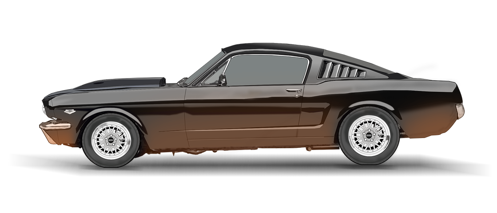
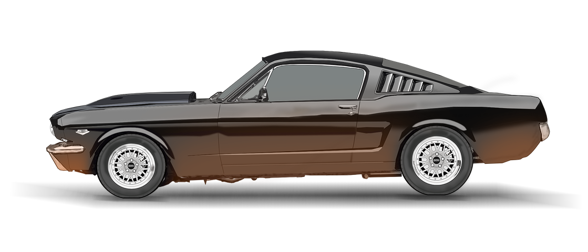
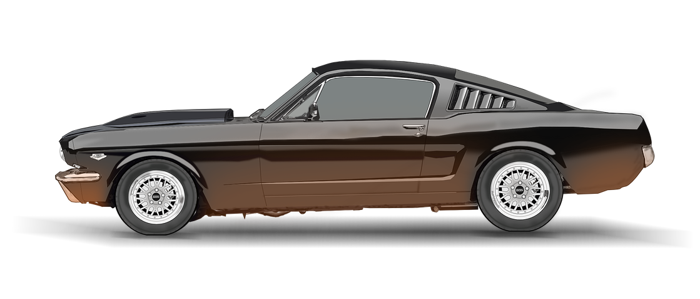
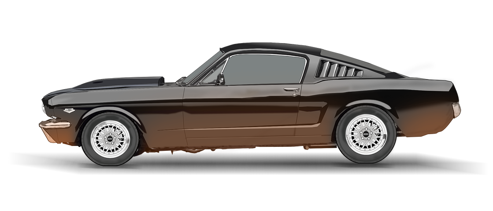

Mustang-carrosserie uit 1969 op een GT500-chassis uit 2014?
 

Mustang-carrosserie uit 1969 op een GT500-chassis uit 2014?

Ford heeft een nieuwe Mach 1 in de maak.
Het is geen Mustang, maar een volledig elektrisch aangedreven bedrijfswagen die hij over een paar jaar wil onthullen.
Maak je geen zorgen als dat niet jouw ding is, want nu kun je een gloednieuwe versie van de originele Mustang Mach 1 kopen.
In ieder geval het dichtst bij.
Classic Recreations of Yukon, Oklahoma heeft het afgelopen decennium een verscheidenheid aan officieel gelicentieerde Mustang Shelby-modellen gebouwd, en heeft nu de rechten verkregen om hetzelfde te doen voor de 1969-1970 Mach 1, Boss 302 en Boss 429.

Ze beginnen met ofwel een nieuwe carrosserie gebouwd door R3 of een standaard Mustang-donorauto die ze afbreken, in perfecte vorm krijgen en alle onderdelen toevoegen die nodig zijn om de originele look van de hoogwaardige modellen na te bootsen.
Alles eronder krijgt ook een opfrisbeurt, inclusief een schroefsetophanging, moderne remmen en een nieuwe Ford Performance-motor.
 Boss 429 (klassieke recreaties)
Boss 429 (klassieke recreaties)
Ze leveren vrijwel alles wat de klant wil, maar eigenaar Jason Engel zegt dat de eerste 429 een 460 kubieke inch V8 zal hebben met 'Boss 9' halfronde koppen en elektronische brandstofinjectie die al 700 pk levert, en ze zijn nog niet klaar met afstemmen.
BUY NOW

Als je vandaag een Ford-dealer binnenloopt, kun je een Mustang GT uit 2018 kopen die 460 pk levert, in 4,4 seconden 100 km / u haalt en een optionele magnetische ophanging bevat voor minder dan $ 45.000. Hij zal comfortabel en verfijnd genoeg zijn om een roadtrip te maken, terwijl hij toch gelijke tred houdt met de duurdere BMW M4 op het circuit.

Maar hoe goed de huidige auto ook is, er zal altijd een bepaalde groep mensen zijn die willen dat Ford gewoon vintage Mustangs blijft bouwen. Dat is waar vervolgbouwers zoals Classic Recreations binnenkomen.
Classic Recreations bouwt al een tijdje officieel erkende Shelby Mustangs, en volgens onze vrienden bij AUTOMOBILE zijn ze goed. Heel goed. Onlangs heeft CR de licentie gekregen om nog drie klassieke Mustangs te bouwen: de 1969-1970 Boss 302, de 1969-1970 Boss 429 en de 1969-1970 Mach 1. Dit zijn ook geen resto-mods. Onder het vintage plaatwerk krijg je in wezen een gloednieuwe auto.
LEARN NOWToen we voor het eerst naar Jim Weigle's volledig zwarte Mustang SportsRoof uit 1969 liepen tijdens de Carlisle Ford Nationals in 2017, trok het onze aandacht omdat het zo recht als een pijl was en met verf zo diep als de oceaan.


Toen keken we onder de motorkap; "Mooie, Cobra-motorwissel met vier nokken en het ziet er in de fabriek uit." Zoals we al snel ontdekten, was het zo. En dan?
Die motor was in 1969 niet eens een droom in de ogen van een ingenieur. Hoe dieper we keken, hoe duidelijker het werd waar we naar keken. Jim koppelde zeer vakkundig de carrosserie uit 1969 aan het complete chassis en het loopwerk van een Shelby GT500 uit 2014, compleet met het volledige interieur uit 2014, accessoires en zelfs een tankvulopening. En een paar bugs in de grille bewees dat hij ermee naar Carlisle reed vanuit zijn huis in Parkersburg, West Virginia.